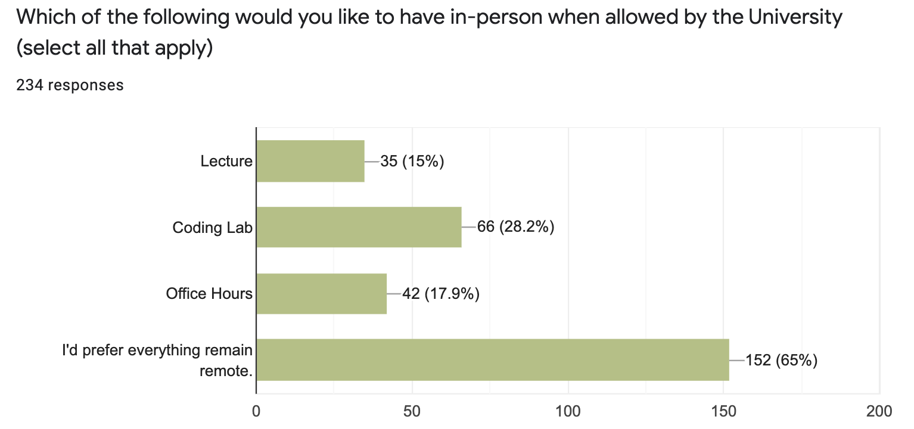

Collections
Contents
Course Announcements (Fri 1/21)
Due Dates:
CL4 due Wed 1/26 (11:59 PM; released this afternoon)
E1 (midterm) due Sun 1/30 11:59 PM
A2 due Mon 1/31 (11:59 PM)
Notes:
E1
released Thurs 1/27 at 3 PM
completed & submitted on datahub
review materials and practice exam posted this afternoon (Fri 1/21)
A2 typos:
Q1 -
return output(notstatus)Q11 -
comp_result_3should be the third variable
CL3 answers posted - check your understanding/work!
Today’s Daily Participation Survey has an additional question about your preferences for returning to in-person. (You will be able to complete remotely regardless of responses here.)
Q&A
Q: What is the best way to check that your conditional statements are correct?
A: Test out what the conditional returns under multiple conditions to ensure the right outcome is reached in each.
Q: Are there situations where we are not supposed to have spaces before/after operators (besides setting a default value for an argument in a function?
A: Nope - we always advise one space around operators. The single exception is when passing a value to a parameter (on definition or execution) within a function.
Q: Do conditions statements always have to print something out?
A: Nope
Q: Can you use conditionals in functions?
A: Yup! We’ll see that today (and you saw it in coding lab)
Q: I am curious about the reasoning for why if is assigned to true and else is false. Is this an arbitrary thing?
A: The decision when to do which will depend on the code you’re trying to write/what you want to accomplish. Look back at the speed/speed_limit example from class and think about if the greater than operator were switched to a less than…how would the code inside the conditional have to switch to make sense?
Q: How/am I able to put “if” statements within other “if” statements? In what situation would I be able to/ want to do this?
A: You would want the second if to be indented within the first. See coding lab answer key for an example. You would want to do this if there were some condition you wanted to test within another condition. For example, if you wanted to determine if someone in your study were an adult, you may have a conditional so that code is only executed if their age is >= 18. Then within that code block you may want to handle the data differently based on gender, so you would have a conditional within your original conditional.
Q: I did a if statement that had multiple conditions using “and”. I also did an if statement with an imbedded if statement. Are both these not similar? Can we use either/or when both conditions need to be met for an if statement.
A: They are similar, but the difference is timing. If you want to require both conditions be checked/true at once, use and. If you want to check one condition and then another, use a nested if.
Q: I’m curious about how many elif statements can be used
A: Theoretically there is no limit. Practically, we want our code/logic to be understandable, so we typically don’t use more than a few.
Q: If I defined an output to return in a function as output for multiple functions, will that cause multiple definitions in its namespace or does it not matter?
A: Since each function has its own namespace, this will not cause a problem.
Q: Will we be graded on coding style on the exams or the upcoming assignments since we have talked about it quite a bit now?
A: On the assignments, you won’t be. On the exam, if we will be grading on coding style we will explicitly tell you in the question. (I haven’t finished the exam, but I anticipate one question on this.) Of course, it’s good to get in good habits, but we’ll be explicit when you’ll be graded on this.
Q: How to do a pseudocode in python. It is kind of hard to describe what to do when we haven’t learnt much of it.
A: This is a skill just like writing the actual code! You’ll surprise yourself how you improve as the quarter goes on at this!
Q: When we have spaces in concatenations of code, do you prefer us to have the space as its own string or should we just add the space to the string of a word/phrase.
A: No preference if you’re concatenating strings directly. However, if you want to concatenate strings and variables you would need to add the space directly: (i.e. var_1 + ' ' var_2)
Q: I’m still a bit confused about the ‘assert’ function. If I first set x = False, the reason why assert x will raise an error is that the ‘assert’ judges whether x is True, is that right?
A: That’s correct. So if an assert ever throws an assertion error…it’s b/c the thing after the assert evaluates as True.
Q: Have the notes for today’s lecture been posted? I’m not able to get them from datahub
A: Please remember to click the link on Canvas to pull in the most recent notes to datahub.
Q: Where do conditionals and booleans differ, because it seems like you still define as true or false for each?
A: Conditionals use booleans to control the flow of code. Conditionals allow you to determine which code is executed…based on boolean logic.
Q: Is it possible to create a range of numbers to be included in a variable? For instance, in the speed limit conditional example, how could we define a range in that space? If we wanted any speed from 55mph-75mph to evaluate as true (rather than exactly 65), how would that be coded?
A: We will get to this…not totally in this lecture but soon! There is a range() operator so feel free to look that up until we get there!
Q: When the code is in red, what does that mean?
A: Typically this means there is an unexpected spacing/indentation issue.
Q: Is it possible to put an if statement inside an if statement?
A: Yup - see coding lab answer key
Q: For coding style, we should have new lines within a function. Does this only apply for functions, or should we also have new lines whenever writing code?
A: The guideline here is to have new lines between different “segments” of code. We’ll discuss this more soon. So, you don’t want a new line between every line of code…but if you want to break up two different parts of your code visually, since they do different things, you would add a line.
Q: Are there going to be questions on assignments that you haven’t explicitly shown us how to set up?
I recognize you want this to be exploratory and for us to mess around to figure things out but I do not learn that way.
I have no idea what to try or what this computer language is. When given a basic example in class and then asked to figure out how to do a complex example on the hw, it is very frustrating and discouraging. I can only repeat what I have been shown how to do because even those things I know I do not understand why or how they work, just that they do.
A: On coding labs, occassionally, but this is b/c they are designed to be introduced/completed in lab where staff are there to answer questions. On assignments, there are only two places where I introduce a concept we haven’t yet discussed in class, but I explicitly explain it in the assignment and show examples. This is b/c I won’t always be there and I want y’all to practice this skill. Other times it may seem like you haven’t been taught something, but you have. And, we’re happy to help explain places you’re stuck on assignments and remind you of the concepts covered.
Q: When we are doing assignments or labs is it okay to add in our own cells to check out other methods or just explore coding more? Can we leave those cells in or should we delete them if they aren’t needed for the assignment?
A: It’s ok to leave them so long as you don’t overwrite the variables we’ve specified in the question.
Q: If we’re printing to test our codes return the correct results, do we need to make sure to delete the (print) before turning in assignments?
A: Nope - feel free to leave print statements.
Q: How do I import the practice in the “Introduction to Python” to the Jupyter notebook so I can really practice the questions?
A: You can download the notebook from the download icon at top-right or copy+paste the specific example using copy+paste icon next to code.
Q: I am still confused when to use one equal sign and two equal signs.
A: Single equals sign is for storing information, assigning what is on the right to the variable on the left. Double equals sign is for checking if the thing on the left is equal to the thing on the right (and returns a boolean)
Course Announcements (Mon 1/24)
Due Dates:
CL4 due Wed 1/26 (11:59 PM)
E1 (midterm) due Sun 1/30 11:59 PM (released Thurs at 3PM)
A2 due Mon 1/31 (11:59 PM)
Notes:
A1 scores released - fetch feedback on datahub
Exam Prep materials now available (website and
Exam-Prep/folder)
COGS 18: The rest of the quarter
Lecture will remain on zoom
Some office hours and some coding labs will be in person
details will be shared in class and Canvas/syllabus will be updated

Q&A
Q: what is the difference between “elif” and “elif not”
A: Think of these as two different concepts. elif always means/should be read as “else if”. However the not negates whatever comes after it. So the not does NOT affect the behavior of elif.
Q: Will the answer keys to the coding labs and assignments ever be taken down? For example, will I have access to them during E1 and when I’m working on A2?
A: Answer keys will remain up throughout the quarter. Note, however, that assignment answer keys are not posted…but your feedback is and will remain available.
Q: [start:stop:step] I’m confused about the wording. So start means it will start at the list, but what do stop and step mean? Does step mean the amount you skip? And does stop mean stop after X number of things?
A: stop indicates where the slice should end. step indicates how many values to skip over. I discussed this with a student for a bit at the end of lecture on Friday, so feel free to check out the questions after lecture!
Q: How would you compare values you are indexing, such as on A2, where it asks to compare one value in a list and the last three in another list?
A: This is/assignment questions are best for campuswire, so it’s more easily searchable. But, this would combine two concepts: indexing and comparison operators. So, for example, if you wanted to see if a value in list1 were greater than a value in list2, it would look somethign like this: list1[index] > list2[index]
Q: why python only have list instead of so called array
A: Python also has arrays, which can be N-dimensional. We’ll discuss those toward the end of the quarter.
Q: Can we include multiple “else” statements just like how we can include multiple “elif” statements?
A: Nope - since there is no condtion attached and it is a “catch all” after all the other conditions, you can only have a single else.
Q: I wonder how to return multiple things from a function. So far we have only return one thing, but what do I do when I need to return multiple things, like a sum and a product. Python doesn’t allow multiple return statement in a function.
A: We’ll get there, but you’ll return them as a tuple (being discussed today!) so your return statement would look like return var1, var2.
Q: Can you combine lists with conditionals?
A: Yup - this is most often done with loops - we’ll get to those next week!
Q: in if statement, for example, can we use condition = True instead of condition == True?
A: Nope b/c the former is a statement of assignment…which does not evaluate as either True or False.
Q: Will we still have the option to view lectures remotely if the in person option exists?
A: Yes
Q: I am still a bit confused on what nested conditionals are? Or what they do?
A: A nested conditional allows you to check a conditional within another conditional.
Collections¶
Lists, Tuples, Dictionaries
Indexing
Mutating
chrandord
Collections: Lists¶
List examples¶
# Define a list
lst = [1, 'a', True]
# Print out the contents of a list
print(lst)
[1, 'a', True]
# Check the type of a list
type(lst)
list
Indexing¶
# Define a list
my_lst = ['Julian', 'Amal', 'Richard', 'Juan', 'Xuan']
# Indexing: Count forward, starting at 0, with positive numbers
print(my_lst[1])
Amal
# Indexing: Count backward, starting at -1, with negative numbers
print(my_lst[-1])
Xuan
# Indexing: Grab a group of adjacent items using `start:stop`, called a slice
print(my_lst[2:4])
['Richard', 'Juan']
# indexing to end of list
print(my_lst[2:])
['Richard', 'Juan', 'Xuan']
# Indexing from beginning of list
print(my_lst[:4])
['Julian', 'Amal', 'Richard', 'Juan']
my_lst
['Julian', 'Amal', 'Richard', 'Juan', 'Xuan']
my_lst[0:4:3]
['Julian', 'Juan']
# slicing by skipping a value [start:stop:step]
print(my_lst[0:4:2])
['Julian', 'Richard']
Reminders¶
Python is zero-based (The first index is ‘0’)
Negative indices index backwards through a collection
A sequence of indices (called a slice) can be accessed using
start:stopIn this contstruction,
startis included then every element untilstop, not includingstopitselfTo skip values in a sequence use
start:stop:step
Clicker Question #1¶
What would be the appropriate line of code to return ['butter', '&', 'jelly']?
q1_lst = ['peanut', 'butter', '&', 'jelly']
q1_lst[-3:]
['butter', '&', 'jelly']
A)
q1_lst[2:4]B)
q1_lst[1:3]C)
q1_lst[:-2]D)
q1_lst[-3:]E)
q1_lst[1:4:2]
Note: The following has been added to the notes due to student questions in previous iterations. This and the following two cells are not someting you’ll be tested on. Including as an FYI for those curious.
You can return [‘jelly’, ‘&’, ‘butter’] but it combines two different concepts.
the
start:stopnow refers to indices in the reverse.-1is used as the step to reverse the output.
More details about step:
step: the amount by which the index increases, defaults to 1. If it’s negative, you’re slicing over the iterable in reverse.
# slice in reverse
q3_lst[-1:-4:-1]
# you can use forward indexing
# makes this a little clearer
q3_lst[3:0:-1]
Mutating a List¶
# reminder what's in my_lst
my_lst
['Julian', 'Amal', 'Richard', 'Juan', 'Xuan']
# Redefine a particular element of the list
my_lst[2] = 'Rich'
# Check the contents of the list
print(my_lst)
['Julian', 'Amal', 'Rich', 'Juan', 'Xuan']
Clicker Question #2¶
What would the following code accommplish?
lst_update = [1, 2, 3, 0, 5]
print(lst_update[3])
lst_update[3] = 4
lst_update
0
[1, 2, 3, 4, 5]
lst_update = [1, 2, 3, 0, 5]
lst_update[3] = ["a", "b"]
lst_update
[1, 2, 3, ['a', 'b'], 5]
A) replace 0 with 4 in
lst_updateB) replace 4 with 0 in
lst_updateC) no change to
lst_updateD) produce an error
E) I’m not sure
Collections: Tuples¶
Tuple Examples¶
# Define a tuple
tup = (2, 'b', False)
# Print out the contents of a tuple
print(tup)
(2, 'b', False)
# Check the type of a tuple
type(tup)
tuple
# Index into a tuple
tup[0]
2
# Get the length of a tuple
len(tup)
3
Tuples are Immutable¶
tup
(2, 'b', False)
# Tuples are immutable - meaning after they defined, you can't change them
# This code will produce an error.
tup[2] = 1
---------------------------------------------------------------------------
TypeError Traceback (most recent call last)
<ipython-input-43-6b0fd3f24bc7> in <module>
1 # Tuples are immutable - meaning after they defined, you can't change them
2 # This code will produce an error.
----> 3 tup[2] = 1
TypeError: 'tuple' object does not support item assignment
Clicker Question #3¶
Which of the following specifies a tuple of 2 items?
item_A = ['100-11-2233', '200-22-3344']
item_B = ('100-11-2233', '200-22-3344')
item_C = ['100-11-2233', '200-22-3344', 1234, 0]
item_D = ('100-11-2233', '200-22-3344', 1234, 0)
item_E = (12)
A) item_A
B) item_B
C) item_C
D) item_D
E) item_E
Dictionaries¶
Dictionaries as Key-Value Collections¶
# Create a dictionary
dictionary = {'key_1' : 'value_1', 'key_2' : 'value_2'}
# Check the contents of the dictionary
print(dictionary)
{'key_1': 'value_1', 'key_2': 'value_2'}
# Check the type of the dictionary
type(dictionary)
dict
# Dictionaries also have a length
# length refers to how many pairs there are
len(dictionary)
2
Dictionaries: Indexing¶
# can't index with index number OR value
dictionary[0] # won't work
dictionary['value_1'] # won't work
---------------------------------------------------------------------------
KeyError Traceback (most recent call last)
<ipython-input-50-b52c63a6cc58> in <module>
----> 1 dictionary['value_1']
KeyError: 'value_1'
# Dictionaries are indexed using their keys
dictionary['key_1']
'value_1'
Dictionaries are mutable¶
This means that dictionaries, once created, values can be updated.
completed_assignment = {
'A1234' : True,
'A5678' : False,
'A9123' : True
}
completed_assignment
{'A1234': True, 'A5678': False, 'A9123': True}
# change value of specified key
completed_assignment['A5678'] = True
completed_assignment
{'A1234': True, 'A5678': True, 'A9123': True}
Because dictionaries are mutable, key-value pairs can also be removed from the dictionary using del.
print(completed_assignment)
len(completed_assignment)
{'A1234': True, 'A5678': True, 'A9123': True}
3
## remove key-value pair using del
del completed_assignment['A5678']
print(completed_assignment)
len(completed_assignment)
{'A1234': True, 'A9123': True}
2
Additional Dictionary Properties¶
Only one value per key. No duplicate keys allowed.
If duplicate keys specified during assignment, the last assignment wins.
# Last duplicate key assigned wins
{'Student' : 97, 'Student': 88, 'Student' : 91}
{'Student': 91}
keys must be of an immutable type (string, tuple, integer, float, etc)
Note: values can be of any type
# lists are not allowed as key types
# this code will produce an error
{['Student'] : 97}
---------------------------------------------------------------------------
TypeError Traceback (most recent call last)
<ipython-input-60-27b11708f095> in <module>
1 # lists are not allowed as key types
2 # this code will produce an error
----> 3 {['Student'] : 97}
TypeError: unhashable type: 'list'
Dictionary keys are case sensitive.
{'Student' : 97, 'student': 88, 'STUDENT' : 91}
{'Student': 97, 'student': 88, 'STUDENT': 91}
Clicker Question #4¶
Fill in the ‘—’ in the code below to return the value stored in the second key.
height_dict = {'height_1' : 60, 'height_2': 68, 'height_3' : 65, 'height_4' : 72}
height_dict['height_2']
68
A) I did it
B) I think I did it…
C) I tried and am stuck
D) No clue where to start…
Clicker Question #5¶
Write the code that would create a dictionary car that stores values about your dream car’s make, model, and year.
A) I did it
B) I think I did it…
C) I tried and am stuck
D) No clue where to start…
# YOUR CODE HERE
Revisiting membership: in operator¶
in operator asks whether an element is present inside a collection, and returns a boolean answer.
# Define a new list and dictionary to work with
lst_again = [True, 13, None, 'apples']
dict_again = {'Shannon': 33, 'Josh': 41}
# Check if a particular element is present in the list
True in lst_again
True
# The `in` operator can also be combined with the `not` operator
'19' not in lst_again
True
# In a dictionary, checks if value is a key
'Shannon' in dict_again
True
# does not check for values in dictionary
33 in dict_again
False
Clicker Question #6¶
After executing the following code, what will be the value of output?
ex2_lst = [0, False, 'ten', None]
bool_1 = False in ex2_lst
bool_2 = 10 not in ex2_lst
output = bool_1 and bool_2
print(output)
A) True
B) False
C) This code will fail
D) I don’t know
Unicode¶
Every character has a unicode code point - an integer that can be used to represent that character.
If a computer is using unicode, it displays a requested character by following the unicode encodings of which code point refers to which character.
ORD & CHR¶
ord returns the unicode code point for a one-character string.
chr returns the character encoding of a code point.
Inverses¶
ord and chr are inverses of one another.
inp = 'b'
out = chr(ord(inp))
assert inp == out
# print('Input: \t', inp, '\nOutput: ', out)
print(inp, out)
b b
END OF MATERIAL FOR A2 AND FOR E1
WILL DO STUFF BELOW ON FRIDAY 1/28
Aside: Aliases¶
Note: This was introduced in the Variables lecture.
# Make a variable, and an alias
a = 1
b = a
print(b)
1
Here, the value 1 is assigned to the variable a.
We then make an alias of a and store that in the variable b.
Now, the same value (1) is stored in both a (the original) and b (the alias).
What if we change the value of the original variable (a) - what happens to b?
Clicker Question #7¶
After executing the following code, what will the values stored in a and b be?
# Make a variable & an alias
# change value of original variable
a = 1
b = a
a = 2
print(a)
print(b)
2
1
A)
aandbboth store 1B)
aandbboth store 2C)
astores 2bstores 1D)
astores 1bstores 2E) No clue
Reminder: integers are immutable.
Alias: mutable types¶
What happens if we make an alias of a mutable variable, like a list?
first_list = [1, 2, 3, 4]
alias_list = first_list
alias_list
[1, 2, 3, 4]
#change second value of first_list
first_list[1] = 29
first_list
[1, 29, 3, 4]
# check alias_list
alias_list
[1, 29, 3, 4]
For mutable type variables, when you change one, both change.
Clicker Question #8¶
After executing the following code, what will the second value stored in second_tuple?
# Make a variable & an alias
# change value of original variable
my_tuple = (1, 2, 3, 4)
second_tuple = my_tuple
my_tuple[1] = 29
# will not print b/c after error encountered
print(second_tuple[1])
---------------------------------------------------------------------------
TypeError Traceback (most recent call last)
<ipython-input-91-732c2041bfd0> in <module>
3 my_tuple = (1, 2, 3, 4)
4 second_tuple = my_tuple
----> 5 my_tuple[1] = 29
6 print(second_tuple[1])
TypeError: 'tuple' object does not support item assignment
second_tuple[1]
2
A) 1
B) 2
C) 29
D) This will Error
E) I’m lost.
Why allow aliasing?¶
Aliasing can get confusing and be difficult to track, so why does Python allow it?
Well, it’s more efficient to point to an alias than to make an entirely new copy of a a very large variable storing a lot of data.
Python allows for the confusion, in favor of being more efficient.